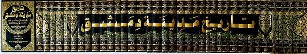

Mengenal Imam Ibnu Asakir
Nama dan Nasabnya
Nama Imam Ibnu Asakir adalah Ali bin al-Hasan bin Habbatullah bin Abdullah bin Husein ad-Dimasyqi asy-Syafi’i (ulama madzhab Syafi’i). Kun-yahnya Abu al-Qasim. Ia dilahirkan pada bulan Muharram tahun 499 H/1105 M di Kota Damaskus.
Beliau belajar ilmu fikih sedari kecil di Kota Damaskus. Ayahnya, al-Hasan bin Habbatullah, adalah seorang guru yang shaleh, adil, cinta ilmu, teladan bagi para ulama, dan memiliki perhatian yang besar terhadap ilmu agama, khususnya bidang fikih.
Lingkungan Masa Kecilnya
Shalahuddin al-Munjid dalam pengantar Tarikh Ibnu Asakir jilid satu mengatakan, “Lingkungan pertumbuhan al-Hafizh Ibnu Asakir memiliki pengaruh besar yang mengarahkan beliau kepada ilmu dan menjadikannya seorang yang cerdas. Ia tinggal di rumah dimana perkara-perkara diputuskan, hadits-hadits dan fikih dikaji. Rumahnya dipenuhi dengan ulama-ulama besar dan hakim-hakim Damaskus. Sejak kecil Ibnu Asakir melihat para ulama dan mendapat pemahaman ilmu”.
Kakak Ibnu Asakir yang bernama Shainuddin Habbatullah bin al-Hasan (488 – 563H) adalah seorang ahli fikih, mufti, dan ahli hadits. Ia membaca Alquran dengan beberapa riwayat. Ia seorang yang fakih dan cerdas. Sang kakak pernah bersafar ke berbagai wilayah dan mempelajari banyak cabang ilmu, seperti ilmu-ilmu ushul dan nahwu. Ia berguru dengan Abu al-Hishn as-Sulmi. Di sela-sela kegiatan belajar, ia juga memberikan fatwa dan produktif menulis. Shainuddin adalah seorang imam yang tsiqah, kuat agamanya, dan wara’.
Saudara Ibnu Asakir yang lainnya adalah Abu Abdillah Muhammad bin al-Hasan. Ia juga seorang hakim. Artinya ia adalah ulama. Anak-anak Abu Abdillah yang berjumlah enam orang juga seorang dai dalam ilmu dan hadits.
Ibu Ibnu Asakir adalah wanita keturunan Quraisy. Kakek dari pihak ibu adalah Yahya bin Ali bin Abdul Aziz al-Qurasyi. Seorang hakim dan fakih yang senior. Ia sangat pakar dalam bahasa Arab, tsiqah, dan menyampaikan ceramah dengan fasih. Ia belajar kepada Abu Bakr asy-Syasyi. Di Damaskus, ia belajar kepada al-Qadhi al-Marwazi dan al-Faqih Nashr. Ibnu Asakir meriwayatkan hadits dari kakeknya ini.
Pamannya dari pihak ibu adalah Muhammad bin Yahya. Seorang ulama yang menjabat hakim. Laki-laki Quraisy yang terpercaya dan bijak dalam memutuskan masalah. Sejumlah ulama di masanya belajar dan meriwayatkan ilmu darinya. Termasuk Ibnu Asakir. As-Sam’ani berkata tentangnya, “Ia adalah seorang yang terpuji. Perjalanan hidupnya baik. Penyayng dan terhormat. Juga seorang yang menarik penampilannya”.
Satu lagi paman dari pihak ibunya yang juga seorang ulama, Sulthan bin Yahya. Ia dijuluki zainul qudha, perhiasan para hakim. Seorang laki-laki Quraisy yang mulia.
Dengan lingkungan keluarga yang demikian, wajar Ibnu Asakir mulai mengkaji ilmu di usia dini. Saat berumur 6 tahun, ia sudah belajar dari ayahnya serta dua orang kakaknya. Kemudian Abul Qashim, Qawam bin Zaid, Sabigh bin Qirath, Abu Thahir al-Hanai, Abul Hasan bin Mawazini, dan juga ke majelis-mejelis ilmu lainnya.
Dalam pengantar Tarikh Ibnu Asakir jilid satu, Shalahuddin al-Munjid mengatakan, “Inilah lingkungannya. Ia bertemu dengan ahli hadits yang membantunya membuka potensi kecerdasan dan memenuhi keinginannya. Sehingga di kemudian hari Ibnu Asakir mencapai derajat seorang ahli sejarah Syam dan ahli hadits di zamannya”.
Perjalanan Belajar
Perjalanan Pertama: Ke Baghdad
Pada tahun 520 H/1126 M, saat itu Ibnu Asakir menginjak usia 21 tahun. Sambil terus belajar, ia juga mengisi waktunya dengan mengajar. Pengetahuannya yang luas tentang riwayat-riwayat hadits ia dapatkan ketika mengumpulkan matan-matan, sanad-sanad, menghafal, dan membaca. Kesungguhannya ini membuatnya mencapai derajat seorang ahli hadits dan ulama. Ia tidak berpuas diri hanya dengan mendapatkan ilmu Dari halaqah-halaqah, masjid-masjid, madrasah-madrasah, dan para ulama di Damaskus. Ia berusaha untuk mendapat sesuatu yang lebih. Akhirnya, ia memutuskan untuk bersafar keluar Damaskus. Belajar hadits dari ulama-ulama dan ahli fikih ternama.
Dalam pengantar Tarikh Ibnu Asakir jilid satu, Shalahuddin al-Munjid mengatakan, “Perjalanannya dalam belajar hadits dan mendengar dari banyak guru memiliki pengaruh yang signifikan. Tak seorang ahli hadits besar pun dalam perjalannya ia lewatkan. Sehingga ia memperoleh sanad yang tinggi. Pusat-pusat ilmu tersebar di wilayah-wilayah Islam. Banyak ulama dan ahli fikih yang membagi-bagi ilmu mereka. Saat itu halaqah-halaqah belajar dan diskusi digelar di madrasah-madrasah dan masjid-masjid oleh para ahli fikih, ahli hadits, dan ulama-ulama”.
Kota Baghdad di masa itu adalah surga dunia karena keindahan tata kotanya. Kota yang menjadi pusat ilmu. Dan banyak dikunjungi oleh orang-orang dari penjuru negeri. Walaupun banyak kota-kota ilmu fikih dan hadits di wilayah Islam, seperti: Mesir, Mekah, Madinah, Khurasan, Naisabur, Ashbahan, Hirah, Thus, dll. namun Baghdad tetap menjadi kota yang utama. Penduduk Baghdad dikenal sebagai orang yang paling bersemangat dalam mempelajari dan menulis hadits. al-Khatib al-Baghdadi mengatakan, “Penduduk Baghdad dikenal sebagai orang-orang intelektual dan teliti dalam meriwayatkan hadits dan adabnya. Mereka adalah orang-orang yang paling berhati-hati dalam meriwayatkannya. Mereka dikenal dengan sifat ini” (Tarikh Baghdad oleh al-Khatib al-Baghdadi)
Pada tahun 521 H, Ibnu Asakir pergi menuju Mekah untuk menunaikan ibadah haji. Ia menggunakan kesempatan ini untuk mendengar riwayat hadits dari ulama-ulama Mekah, Mina, dan Madinah. Di antranya Abdullah bin Muhammad al-Mishri dan Abdul Khalaq bin Abdul Wasi’ al-Hawari.
Saat kembali ke Baghdad, orang-orang Irak kian takjub padanya. Mereka berkata, “Kami belum pernah melihat orang semisalnya”.
Setelah merasa cukup menimba ilmu dari tokoh-tokoh ulama Baghdad, Ibnu Asakir memutuskan untuk kembali ke Damaskus pada tahun 525 H/1131 M.
Perjalanan Kedua: Ke Negeri-Negeri non Arab
Debu-debu safarnya belum juga bersih, namun Ibnu Asakir telah berpikir untuk melanjutkan pencarian riwayat hadits. Ia berangkat ke Asbahan, Naisabur, Merv, Tabriz, Khosrowjerd, Bastam, Damghan, Ray, Zanjan, Hamadan, Herat, Sarakhs, Semnan, Abhar, Khuwi, Marand, dll.
Dalam perjalanan menuju Khurasan, di jalan-jalan Azerbaijan, tepatnya di Naisabur, ia berjumpa dengan as-Sam’ani. As-Sam’ani memuji Ibnu Asakir dengan mengatakan, “Abul Qasim seorang yang luas ilmunya dan banyak keutamaannya. Seorang penghafal yang kokoh hafalan dan agamanya. Baik akhlaknya. Ia seorang yang menggabungkan pengetahuan akan matan dan sanad dengan baiknya bacaan dan tulisan… …Ia mengumpulkan sesuatu yang belum pernah dilakukan oleh selainnya –artinya ilmu beliau luas-. Ia masuk ke Naisabur satu bulan sebelumku. Aku meriwayatkan darinya dan dia juga meriwayatkan dariku. Ia menulis sebuah buku sejarah yang tebal untuk Damaskus” (Tadzhib Siyar Alam an-Nubala Jilid 3 Hal: 81).
Di Naisabur, Ibnu Asakir belajar dari Abu Abdullah al-Farawi. Ia bermulazamah beberapa waktu kepadanya. Al-Farawi mengatakan, “Ibnu Asakir datang. Ia membaca (meminta koreksi) di hadapanku 3 hadits lebih. Aku pun merasa berat. Muncul keinginan di hatiku agar menutup pintu untuknya”. Kemudian kata as-Sam’ani, “Di pagi harinya, ada seseorang datang kepadaku (dalam mimpi). Laki-laki itu berkata, “Aku adalah Rasulullah ﷺ”. “Marhaban bik –ya Rasulullah-”, kataku. Kemudian beliau berkata, “Temuilah al-Farawi dan katakan padanya, ‘Datang seorang laki-laki berkulit coklat dari Syam ke negeri kalian. Ia ingin meriwayatkan haditsku. Jangan kalian sia-siakan dia.” (al-Inayatu bi Thullab al-Ilmi Inda Ulama al-Muslimin oleh Abdul Hakim Unais)
Saat di Khurasan Ibnu Asakir sibuk mendengar hadits dari ulama-ulama negeri tersebut. Sedangkan di Asbahan dan Naisabur, selain menyimak, para ulama yang lebih senior darinya juga mendengar hadits-hadits darinya.
Perjalanannya di negeri non Arab berlangsung selama empat tahun. Ia habiskan waktu-waktu tersebut untuk bermulazamah kepada para ulama, ahli fikih, ahli hadits, meneliti hadits baik thuruq-nya, orang-orang yang meriwayatkan dan apa yang mereka riwayatkan, serta sanad-sanadnya. Karena inilah ia mencapai kedudukan yang tidak dicapai oleh orang selainnya. Setelah menyelesaikan perjalanan ini, ia kembali ke Baghdad kemudian ke Damaskus.
Dalam perjalannya ke negeri-negeri non Arab, Ibnu Asakir berhasil bertemu setidaknya 1300 ulama. 80an di antara mereka adalah perempuan. Banyak pelajaran yang ia dapatkan dari guru-gurunya. Dan ia pun berhasil menghafal banyak buku
Kembali ke Damaskus
Pada saat berumur 43 tahun, Ibnu Asakir kembali ke Damaskus dan menetap di kota tertua di dunia itu. Ia merasa saat ini adalah saat yang tepat untuk fokus mengajar dan memberi kontribusi besar dalam membina umat. Ia berkata kepada salah seorang muridnya, Abul Mawahib, “Ketika aku sudah membulatkan tekad untuk menyampaikan hadits –demi Allah- sungguh aku tidak menginginkan kepemimpinan dan diunggulkan. Aku berkata, ‘Kapan aku akan meriwayatkan apa yang telah kudengar?’ ‘Faidah apa yang bisa aku tuliskan?’ Aku beristikhoroh kepada Allah, meminta izin guru-guruku, dan tokoh-tokoh masyarakat, kutemui mereka semua. Mereka berkata, ‘Siapa lagi yang lebih berhak darimu?’ Aku pun mulai menyampaikan hadits pada tahun 533 H/1138 M”.
Perjalanan menuntut ilmu ini adalah fase terpanjang dalam umur Ibnu Asakir. Ibnu Najjar mengatakan, “Mungkin di masanya, ia mencapai kedudukan yang tertinggi dalam hafalan, kekokohan ilmu, pengetahuan tentang ilmu hadits dan ke-tsiqah-annya, kecerdasan, dan tajwid.”
Bahauddin berkata tentang ayahnya Ibnu Asakir, “Ayahku berkata kepadaku, ‘Saat ibuku mengandungku, ia melihat di dalam mimpinya ada seorang yang berkata, ‘Engkau akan melahirkan seorang anak laki-laki yang memiliki kedudukan tinggi. Melalui dirinya, Allah memberkahimu dan juga kaum muslimin’.”
Benarlah mimpi sang ibu. Ia melahirkan seorang anak yang bergadang di malam hari untuk mempelajari agama yang mulia ini.
Karya-Karyanya
Setelah membekali diri dengan ilmu dengan riwayat perjalanan yang luar biasa, Ibnu Asakir mulai menuangkan buah pikirannya dalam tulisan-tulisan. Para sejarawan mengumpulkan dan menghitung karya-karya Ibnu Asakir lebih dari 60 buku. Sebagian besar tulisannya adalah tentang ilmu hadits dan sisanya tentang keutamaan amalan. Karya utamanya adalah Tarikh Dimasyq.

Kitab Tarikh Dimasyq karya Ibnu AsakirDi antara karya tulisanya adalah:
Tarikh Dimasyq, al-Ijtihad fi Iqamati Fardhi al-Jihad, al-Ahadits al-Khumasiyat wa Akhbar Ibnu Abi Dunya, al-Ahadits al-Mutakhayyirat fi Fadhail al-Asyrati fi Juzain, Amali fi al-Hadits, Tabyin Kadzabi al-Muftari fima Nasaba ila Abil Hasan al-Asy’ari, Tsawabu ash-Shabr ‘ala al-Mashaib bil Walad, Fadhlu Ashhabul Hadits, Kitab Fadhlu Makkah, Kitab Fadhlu al-Madinah, Kitab Dzammu Man La Ya’mal Bi’ilmihi, Kitab Fadhail ash-Shiddiq, dll.
Produktifitasnya ini menunjukan kesungguhannya dalam berdakwah dan sebelumnya membekali diri dengan ilmu pengetahuan yang luas. Dengan karya-karyanya itu, namanya tetap abadi hingga kini.
Madrasah Darul Hadits An-Nuriyah
Madrasah Darul Hadits an-Nuriyah adalah sekolah negeri pada masa Dinasti Nuriyah. Sekolah ini seolah menjadi laboratorium bagi Ibnu Asakir. Karena, disinilah Ibnu Asakir banyak menelurkan buah pemikirannya: mengajar dan menulis. Ia jadi semakin sibuk dengan kegemarannya, ilmu dan ibadah. Dan semakin mengalihkannya dari kegemerlapan dunia.
Madrasah an-Nuriyah menunjukkan dekatnya hubungan ulama dan umara. Raja Nuruddin az-Zanki –Raja Dinasti Nuriyah- lah yang membangunnya untuk Ibnu Asakir.
Wafatnya Sang Imam
Ibnu Asakir rahimahullah wafat di malam senin 11 Rajab 571 H/1176 M. Sultan Shalahuddin al-Ayyubi turut serta menghadiri jenazahnya. Ia dimakamkan di sisi makam ayahnya. Pemakaman yang sama dengan jenazah Muawiyah bin Abu Sufyan radhiallahu ‘anhu dimakamkan.
Daftar Pustaka:
Al-Inayah bi ath-Thullab al-Ilmi Inda Ulama al-Muslimin oleh Abdul Hakim al-Unais.
Tahdzib Siyar A’lamu an-Nubala karya Imam adz-Dzahabi ditadzhib oleh Ahmad Fayiz al-Humsha.
Tarikh Baghdad oleh al-Khatib al-Baghdadi
Islamstory.com